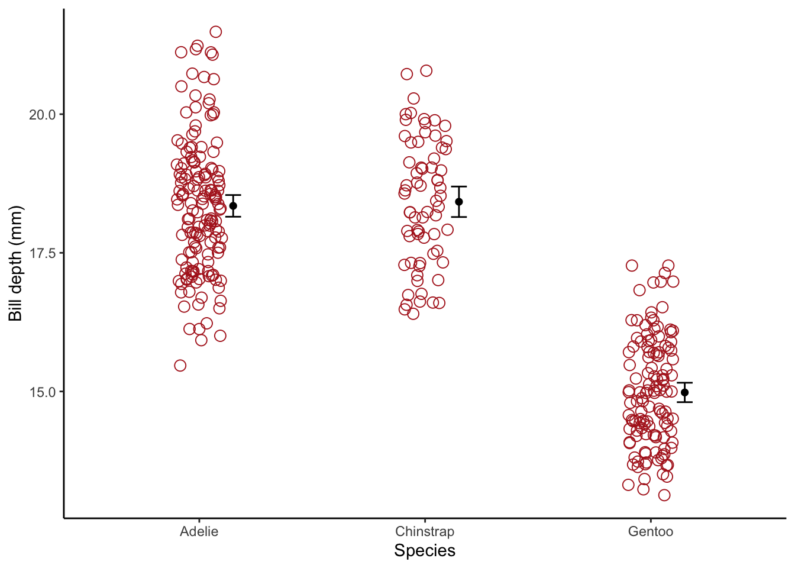

3.5 Stripchart with CI bars
First need to write function to calculate lower and upper confidence limits, based on *t* distribution. Here we can specify the confidence level one wants to use with the conf argument.
# call the lower and upper confidence limits "ymin" and "ymax" respectively
confint.fun.ttest <- function(x, conf = 0.95){
return(data.frame(Mean = mean(x, na.rm = T),
ymin = t.test(x, conf.level = conf)$conf.int[1],
ymax = t.test(x, conf.level = conf)$conf.int[2]))}Now lets create the stripchart , and we’ll use the function above in the stat_summary function.
We’ll create a ggplot object for each step, then show the graph when all pieces are done.
First, the basic stripchart:
penguins.stripchart <- penguins %>%
ggplot(aes(x = species, y = bill_depth_mm)) +
geom_jitter(color = "firebrick", size = 3, shape = 1, width = 0.1)Now let’s add the confidence interval error bars:
penguins.stripchart.bars <- penguins.stripchart +
stat_summary(fun.data = confint.fun.ttest, geom = "errorbar",
colour = "black", width = 0.07,
position = position_nudge(x = 0.15))Now let’s add a point for each group mean:
penguins.stripchart.bars.mean <- penguins.stripchart.bars +
stat_summary(fun = mean, geom = "point", size = 2, shape = 16,
position = position_nudge(x = 0.15)) +
labs(x = "Species", y = "Bill depth (mm)") +
theme_classic()Now let’s see the plot
penguins.stripchart.bars.mean## Warning: Removed 2 rows containing non-finite values (stat_summary).
## Warning: Removed 2 rows containing non-finite values (stat_summary).## Warning: Removed 2 rows containing missing values (geom_point).
voila!